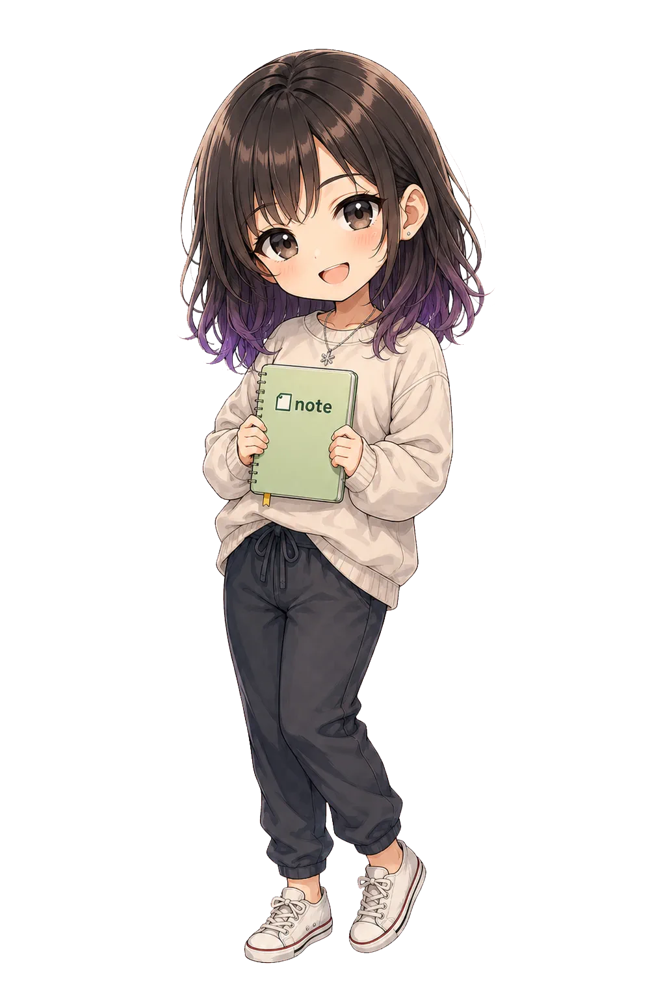

Snow flakes
Under tone
── ひとつ多い音に、気づく場所 ──
LOCKED
三人の物語をすべて知ると、
路地裏への扉が開く

1 / 3

KOUTA

UNDER TONE
rare item ── 1 / 30
Snow flakes
── ひとつ多い音に、気づく場所 ──
LOCKED
三人の物語をすべて知ると、
路地裏への扉が開く
1 / 3
KOUTA
UNDER TONE
rare item ── 1 / 30
FOUND

ONE ORACLE
カードに触れて
アイテムログに追加されました
Snow flakes Tarot · Words & Interpretation · Kotori Yamabuki